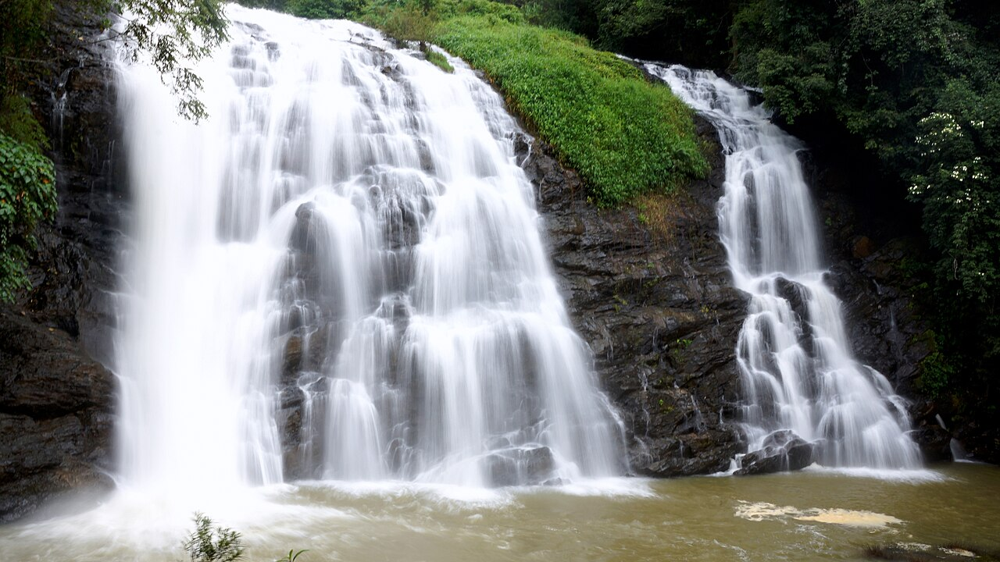

Know Before You Go. Request Live Photos & Call Verified Locals.
Don't rely on outdated blogs or fake reviews. Get instant live ground photos, make 1-click enquiry calls to local residents, and book trusted guides across Karnataka.

✓ Verified SpotterLive Ground Photo Radar
Real-time, on-the-ground visual updates submitted by verified local residents and travelers within the last 60 minutes. Request a custom photo of any spot!
Explore 22+ Iconic Destinations
Request live photos, call local spotters, or book guided experiences across Karnataka.
No destinations matched your search
Try searching for a different place like "Jog Falls", "Coorg", "Murudeshwar", or click Reset.
Meet Verified Karnataka Local Guides
Travel with certified historians, coffee planters, surf coaches, and Western Ghats trek leaders.
Plan Your Karnataka Journey with Locals
Select your travel style to get a personalized day-by-day route with recommended live spotters, local guides, and authentic food stops.
How Guido Travel Intelligence Works
3 simple steps to eliminate travel uncertainties across Karnataka.
Request a Live Ground Photo
Want to know if Jog Falls is roaring or if Om Beach is crowded? Submit a 1-click request and an active spotter uploads a photo in minutes.
Call a Verified Local
Connect 1-on-1 via direct audio call or WhatsApp enquiry with tea estate owners, trek leads, and certified spotters for real-time guidance.
Book a Local Guide
When you arrive, explore with authentic local historians, nature naturalists, and certified drivers for unforgettable memories.